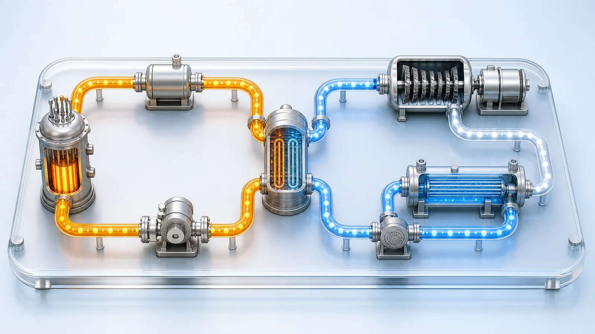
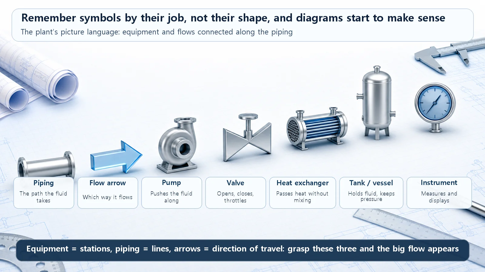
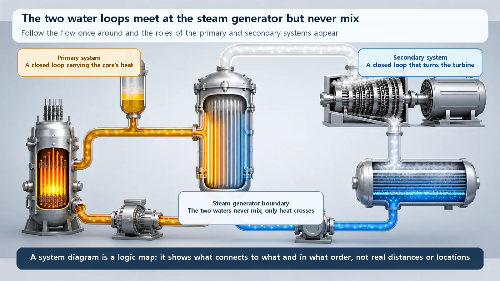

Reactor Types & Plant Systems · 200
Read It Like a Subway Map — First Steps in Reading a Nuclear Plant System Diagram
Learn a few symbols and follow the arrows, and a plant's system diagram reads like a subway map: a logic map of what connects to what.

A nuclear plant system diagram uses agreed symbols to show which components are connected to which, and in what order water and steam flow between them. Like a subway map, it becomes readable once you know a few symbols (pump, valve, heat exchanger, tank, piping, flow arrow, instrument) and follow the arrows. In a pressurized water reactor it reveals two closed loops that meet at the steam generator, where only heat crosses and the water never mixes.
Imagine riding the subway in a city you've never visited. At first, the map on the station wall looks like a tangle of colored lines and circles. Yet within a few minutes, almost anyone can find the way to their destination. Stations are circles, lines are colored strokes, transfer points are where two lines meet: know a handful of conventions and even an unfamiliar map becomes readable.
Nuclear power plants have their own "subway maps." A drawing that uses agreed symbols to show where water and steam start out, which equipment they pass through and where they go is a nuclear plant system diagram. Let's take the first steps toward reading one.
A system diagram is the plant's map
In one sentence, a nuclear plant system diagram is a drawing that shows the plant's systems and components, and the flows of water, steam and so on between them, using agreed symbols. A system is a group of components that together do a particular job; a component is an individual device such as a pump, valve or heat exchanger. [1]
System diagrams come in two main levels of detail. One is the system flow diagram, which shows only the main lines (often just called "the system diagram"). The other is the piping and instrumentation diagram, or P&ID, which draws in every pipe, valve and instrument. If the first is the subway map, the second is a precise map showing every track and signal. We only need the first kind today; the detailed version uses the same symbol language, just more densely.
Learn a few symbols first
Like the circles and lines on a subway map, system diagrams have a few basic symbols.
- Lines (piping): lines connecting one component to another, the paths water or steam take. Thick solid lines are usually the main flow; thin or dashed lines are often auxiliary piping or signal lines.
- Arrows (flow direction): small arrowheads on the piping. This is the most important mark on a system diagram, because it tells you which way the water flows.
- Pump: often drawn as a circle with a triangle or trapezoid attached. It pushes water so that it flows.
- Valve: the classic symbol is two triangles facing each other, like a bow tie. It opens, closes or throttles a flow.
- Heat exchanger (a steam generator is one kind): lets two fluids trade heat without mixing, drawn as a circle or rectangle with the fluid's path inside.
- Tank or vessel: large containers such as the pressurizer or condenser are drawn as tall cylinders or capsule shapes.
- Small circle (instrument): a gauge that measures values such as pressure, temperature, flow or level.
The exact shapes differ somewhat depending on the drawing standard and the plant. (The precise symbols for system diagrams and P&IDs vary between standards such as ISA-5.1 and South Korea's KS standards, and between plants and designers, so only widely used approximate forms are described here.) [2] But the jobs are the same everywhere: the pump pushes fluid, the valve opens and shuts, the heat exchanger passes only heat. Remember symbols by their job rather than their shape, and even an unfamiliar drawing becomes roughly readable.

Now follow the flow
Once you know the symbols, reading is surprisingly simple. A system diagram isn't read like a book, from the top left; you read it by following the flow, just as you pick a starting station on a subway map and run your finger along the line.
Here's the order. First, see what is flowing (water or steam). Next, find where that flow starts (a heat source or a pump). Then follow the arrows with your fingertip from component to component, and check where the flow finally goes. One thing worth knowing in advance: most water flows in a power plant are closed loops that go round and round. The water goes once around and returns to where it started.
Take a pressurized water reactor as an example. Its water runs in two loops that never meet.
The first is the reactor-side loop. Water heated in the core travels through a large pipe to the steam generator, hands over its heat there and cools down, then is driven back to the core by a pump. This circuit carries the core's heat. The second is the electricity-making loop. Water heated into steam in the steam generator spins the turbine; after the turbine, the steam is cooled back into water in the condenser and pumped back to the steam generator.
The key point is that these two loops meet at one place, the steam generator, where they trade only heat across a wall and the water never mixes. [1] That spot is the boundary that separates the primary system from the secondary system on the diagram. On a subway map it would be a transfer station between two lines, but a special one: the passengers (the water) never change trains; only the luggage, heat, is passed across.

A few easy stumbles
The most common mistake is taking the system diagram for a real layout drawing. A system diagram doesn't show where in the plant each component sits or how big it is. It only shows the connections: what is linked to what, and in what order things flow. Just as on a subway map, components drawn close together aren't necessarily next to each other in reality.
Second, if you miss the arrows, it's easy to read the heat source and heat sink, or the sending and receiving sides, backwards. Finally, it's tempting to think the primary and secondary water mix somewhere, but in a normally operating pressurized water reactor they don't. Only heat crosses over.
Scattered pieces on one sheet
Once you get here, something interesting appears. Ideas that might seem separate all have their own place on this one diagram. Whether a reactor type splits its water into two loops like a pressurized water reactor, or makes steam directly in the core and sends it to the turbine like a boiling water reactor, decides the overall shape of the diagram. Water carrying the core's heat to the steam generator, the pressurizer holding pressure steady, the coolant pump circulating the water, and the heat's final journey through the turbine and condenser to become electricity: each is a component and a flow somewhere on the diagram. Once you can read the diagram, they come together as one connected picture, the way scattered alleys turn into one city once you can read the map.
Today's summary
- A nuclear plant system diagram shows the plant's systems, components and flows with agreed symbols; like a subway map, a few symbols are enough to start reading one.
- Remember basic symbols (pump, valve, heat exchanger, tank, piping, arrow, instrument) by what they do rather than their shape.
- Read by following the flow: what flows, where it starts, which components it passes and where it goes, remembering that most flows are closed loops.
- In a pressurized water reactor, the reactor-side loop (primary) and the electricity-making loop (secondary) are separated at the steam generator, where only heat crosses and the water never mixes.
- A system diagram is a logic map of connections, not a layout drawing; things drawn close together aren't necessarily close in reality.